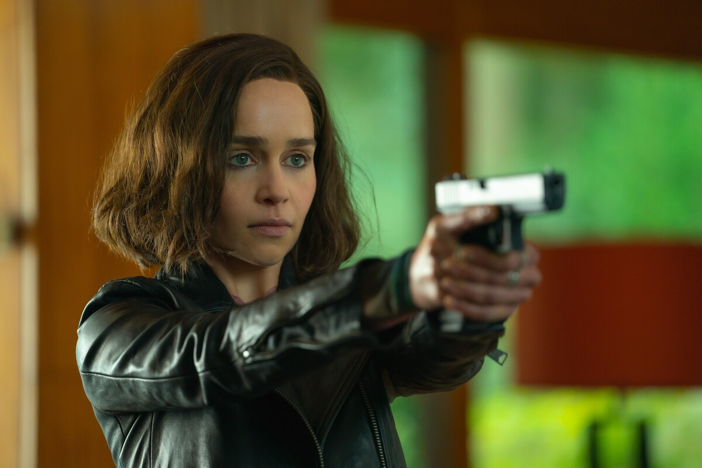

Ela é mais conhecida por sua interpretação de Daenerys Targaryen na série de fantasia da HBO Game of Thrones (2011–2019), pela qual recebeu indicações para quatro Primetime Emmy Awards.Daenerys Targaryen é uma personagem fictícia da série de fantasia épica A Song of Ice and Fire, do escritor norte-americano George R. R. Martin
Me Before You : Como Eu Era Antes de Você; é um filme britano estadunidense de 2016, do gênero drama romântico , dirigido por Thea Sharrock, estrelado por Emilia Clarke, com roteiro de Jojo Moyes, Scott Neustadter e Michael H. Weberbase baseado no romance homônimo de Jojo Moyes.

Solo: A Star Wars Story ou simplesmente Solo (bra: Han Solo: Uma História Star Wars; prt: Han Solo: Uma História de Star Wars) é um space western estadunidense de 2018, centrada em Han Solo, personagem da saga Star Wars, produzido pela Lucasfilm Ltd. e distribuído pela Walt Disney Studios Motion Pictures, sendo o segundo título na série de antologias do universo Star Wars após Rogue One: A Star Wars Story, de 2016.
Depois de passar por Game of Thrones, Star Wars e até Exterminador do Futuro, faltava uma história de super-herói na carreira da atriz. E Emilia Clarke resolveu isso com Invasão Secreta, produção do Universo Cinematográfico da Marvel (MCU, na sigla em inglês) estrelada por Samuel L. Jackson em que a Terra é ocupada por alienígenas transmorfos que querem tomar o planeta para eles.
 Voltar para página principal